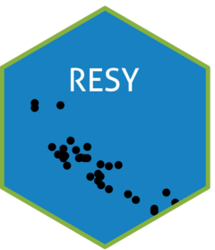
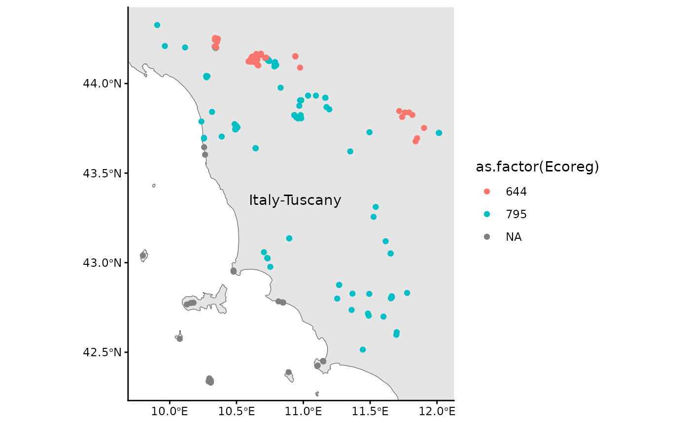

Get additional data
Markus Bauer, Mariasole Calbi & Gilles Colling
2026-10-07
EUNIS.RmdThis vignette illustrates a common use of the package: to classify
European vegetation relevés to EUNIS habitat types (FloraVeg.EU; Chytrý et al. 2024; European Environment
Agency EUNIS Website)
according to the Expert System (ESy) of Chytrý et
al. (2020) (see FloraVeg.EU). The function
resy_harmonize_eunis() incorporates several functions to
collect geographic information about the vegetation survey like the
country, ecoregion, or coastal position. Furthermore, the format of the
coordinates and the taxonomy are checked and adjusted to the
requirements for the expert system (ESy). The function
resy_classify() does the classification of the vegation
relevés including the sites data.
- Prepare the format of the sites including the right coordination system and add information like ecoregion, country or if it is on a coast.
- Check of taxonomy of the species data
- Evaluation of your vegetation relevés and assigning EUNIS habitat types
- Present the results
Example
The following R packages are required to run the example of this vignette:
Load the example data.
The example data include the species data with the vegetation relevés and the sites data with further information to the location of the relevés.
First, load the vegetation relevés:
data_species <- read_csv(
system.file("extdata", "data_example_species.csv", package = "RESY"),
skip = 0
)
data_species
#> # A tibble: 3,580 × 3
#> PlotObservationID Cover_Perc scientificName
#> <chr> <dbl> <chr>
#> 1 HU32 0.1 Dryopteris filix-mas (L.) Schott
#> 2 HU32 0.1 Cephalanthera longifolia (L.) Fritsch
#> 3 HU32 0.5 Prenanthes purpurea L.
#> 4 HU32 0.5 Anemone nemorosa L.
#> 5 HU32 0.5 Epipactis helleborine (L.) Crantz subsp. helleb…
#> 6 HU32 0.5 Sorbus aucuparia L. subsp. aucuparia
#> 7 HU32 87.5 Fagus sylvatica L.
#> 8 HU32 3 Rubus hirtus Waldst. & Kit.
#> 9 HU32 3 Abies alba Mill.
#> 10 HU32 3 Oxalis acetosella L.
#> # ℹ 3,570 more rowsClean names with RESY’s native cleaner: drops author strings but keeps ranks
data_species$scientificName <- RESY::resy_clean_names(
data_species$scientificName
)
# data_species$species <- vegdata::taxname.removeAuthors(data_species$species)Second, load the sites data:
data_sites <- read_csv(
system.file("extdata", "data_example_sites.csv", package = "RESY")
) |>
st_as_sf(coords = c("Longitude", "Latitude"), crs = 4326)
data_sites
#> Simple feature collection with 200 features and 1 field
#> Geometry type: POINT
#> Dimension: XY
#> Bounding box: xmin: 9.809499 ymin: 42.32483 xmax: 12.08963 ymax: 44.32464
#> Geodetic CRS: WGS 84
#> # A tibble: 200 × 2
#> PlotObservationID geometry
#> * <chr> <POINT [°]>
#> 1 JZ37 (9.93798 44.32464)
#> 2 FR49 (11.09287 43.91546)
#> 3 PT45 (11.65339 43.09104)
#> 4 ZH63 (10.53301 43.73897)
#> 5 TF93 (10.40239 44.23978)
#> 6 KG68 (10.40203 44.24087)
#> 7 QJ27 (10.40635 44.2413)
#> 8 JN90 (10.40602 44.24296)
#> 9 ZM18 (10.66071 44.12734)
#> 10 BQ20 (10.6589 44.12456)
#> # ℹ 190 more rowsGet additional data
Load the expert file
We have to parse the expert file which is the base for every
evaluation. We use resy_load_expert.
parsed_expert_file <- RESY::resy_load_expert(scheme = "EUNIS")Apply resy_harmonize_eunis()
We prepare the sites and the species data with
resy_harmonize_eunis().
outcome <- RESY::resy_harmonize_eunis(
data = data_sites,
source_crs = 25832,
run_taxonomy = TRUE,
species_data = data_species,
parsed = parsed_expert_file,
run_coast_dunes = TRUE,
coast_buffer = 5000
)
#> Transforming coordinates to ETRS89 / UTM zone 32N (EPSG:25832).
#> Warning: "Altitude (m)" is missing. See vignette "Altitude data" and
#> mapsforeurope.org for a raster source.
#> Warning: "Ecoreg" contains NA values: some sites are outside the ecoregion base
#> map.
#> Warning: attribute variables are assumed to be spatially constant throughout
#> all geometries
#> Warning: attribute variables are assumed to be spatially constant throughout
#> all geometriesWe have one information and two warnings of RESY: The information
says the transformation to the coordination system UTM zone 32N.
Furthermore, the warning says that the column Altitude (m)
is missing and this could not be covered by
resy_harmonize_eunis(), but we provide a
vignette("Get altitude data"). NAs are in the
ecoregions (Ecoreg) column. This could be the vegetation
relevés on islands which is not covered by the base map.
Inspect additional data
Here are the additional information of ecoregions and countries which
were successfully identified with
resy_harmonize_eunis():
outcome$sites
#> # A tibble: 200 × 11
#> PlotObservationID Coast_EEA Dunes_Bohn Ecoreg Ecoreg_name Country Country_ID
#> <chr> <chr> <chr> <dbl> <chr> <chr> <chr>
#> 1 JZ37 N_COAST N_DUNES 795 Italian scl… Italy IT
#> 2 FR49 N_COAST N_DUNES 795 Italian scl… Italy IT
#> 3 PT45 N_COAST N_DUNES 795 Italian scl… Italy IT
#> 4 ZH63 N_COAST N_DUNES 795 Italian scl… Italy IT
#> 5 TF93 N_COAST N_DUNES 644 Appenine de… Italy IT
#> 6 KG68 N_COAST N_DUNES 644 Appenine de… Italy IT
#> 7 QJ27 N_COAST N_DUNES 644 Appenine de… Italy IT
#> 8 JN90 N_COAST N_DUNES 644 Appenine de… Italy IT
#> 9 ZM18 N_COAST N_DUNES 644 Appenine de… Italy IT
#> 10 BQ20 N_COAST N_DUNES 644 Appenine de… Italy IT
#> # ℹ 190 more rows
#> # ℹ 4 more variables: Longitude <dbl>, Latitude <dbl>, DEG_LON <dbl>,
#> # DEG_LAT <dbl>Missing info
Let us see which vegetation relevés could not get an ecoregion and country:
outcome$sites |>
filter(is.na(Ecoreg))
#> # A tibble: 23 × 11
#> PlotObservationID Coast_EEA Dunes_Bohn Ecoreg Ecoreg_name Country Country_ID
#> <chr> <chr> <chr> <dbl> <chr> <chr> <chr>
#> 1 OR48 MED_COAST N_DUNES NA NA Italy IT
#> 2 EQ56 MED_COAST N_DUNES NA NA Italy IT
#> 3 IS69 MED_COAST N_DUNES NA NA Italy IT
#> 4 JP48 MED_COAST N_DUNES NA NA Italy IT
#> 5 MF17 MED_COAST N_DUNES NA NA Italy IT
#> 6 SA50 MED_COAST N_DUNES NA NA Italy IT
#> 7 DR59 MED_COAST N_DUNES NA NA Italy IT
#> 8 QI21 MED_COAST N_DUNES NA NA Italy IT
#> 9 PK58 MED_COAST N_DUNES NA NA Italy IT
#> 10 OY37 MED_COAST N_DUNES NA NA Italy IT
#> # ℹ 13 more rows
#> # ℹ 4 more variables: Longitude <dbl>, Latitude <dbl>, DEG_LON <dbl>,
#> # DEG_LAT <dbl>Species on the coast (‘MED_COAST’) often have NAs for
ecoregion and country. This has to be corrected by yourself.
Here is the updated map with ecoregions as differetn colors

Checked species names
Let’s have a look on the checked and transformed species names. There are for example no author names anymore:
outcome$species_checked
#> <resy_taxa> 1006 name(s) from column `scientificName` checked against 20159 Section 1 species
#> scientificName Name as submitted
#> TaxonName Canonical name used by resy_classify(); NA when unmatched
#> matched TRUE if found as a canonical name or Section 1 synonym
#> 935 matched (92.9%), 71 unmatched; summary() lists them
#>
#> scientificName TaxonName matched
#> 1 Dryopteris filix-mas Dryopteris filix-mas aggr. TRUE
#> 2 Cephalanthera longifolia Cephalanthera longifolia TRUE
#> 3 Prenanthes purpurea Prenanthes purpurea TRUE
#> 4 Anemone nemorosa Anemone nemorosa TRUE
#> 5 Epipactis helleborine subsp. helleborine Epipactis helleborine aggr. TRUE
#> 6 Sorbus aucuparia subsp. aucuparia Sorbus aucuparia TRUE
#> 7 Fagus sylvatica Fagus sylvatica TRUE
#> 8 Rubus hirtus Rubus fruticosus aggr. TRUE
#> 9 Abies alba Abies alba TRUE
#> 10 Oxalis acetosella Oxalis acetosella TRUE
#> # ... 996 more row(s)
summary(outcome$species_checked)
#> 1006 names checked: 935 matched (92.9%), 71 not matched (7.1%).
#>
#> Not matched:
#> genus only (25): Allium, Anthoxanthum, Asparagus, Carex, Cirsium, Crocus,
#> Cuscuta, Dianthus, Festuca, Galium, Hieracium, Linaria, Medicago, Odontites,
#> Orchis, Potentilla, Ranunculus, Rosa, Rubus, Taraxacum, Tragopogon,
#> Trifolium, Usnea, Vicia, Viola
#> below species level (7): Artemisia caerulescens var. palmata,
#> Cerastium arvense var. etruscum, Festuca arundinacea subsp. arundinacea,
#> Juniperus communis subsp. saxatilis, Melica minuta var. arrecta,
#> Plantago maritima subsp. serpentina, Tanacetum corymbosum var. tenuifolium
#> species (39): Aegopodium podagraria, Anthyllis barba-jovis,
#> Borago officinalis, Cardamine chelidonia, Cardamine monteluccii,
#> Carex macrolepis, Carex mucronata, Centaurea triumfetti, Crithmum maritimum,
#> Crocus neglectus, Echinophora spinosa, Eryngium maritimum,
#> Erysimum pseudorhaeticum, Festuca riccerii, Flavoparmelia caperata,
#> Humulus lupulus, Juglans regia, Laurus nobilis, Leopoldia comosa,
#> Marrubium incanum, Melica uniflora, Narcissus poëticus, Odontites rubra,
#> Ononis variegata, Oreojuncus trifidus, Paris quadrifolia, Phyteuma italicum,
#> Ranunculus velutinus, Scleropodium tourretti, Sherardia arvensis,
#> Silene paradoxa, Silene pichiana, Spartium junceum, Staphylea pinnata,
#> Stipellula capensis, Taraxacum erythrosperma, Thesium sommieri,
#> Tordylium apulum, Viola ferrariniiFinalize species data
We have to merge the species abundances with the checked species names.
outcome_species <- data_species |>
left_join(outcome$species_checked, by = "scientificName") |>
select(PlotObservationID, TaxonName, Cover_Perc)
outcome_species |>
filter(PlotObservationID == "AE28") |>
arrange(desc(Cover_Perc), TaxonName)
#> # A tibble: 14 × 3
#> PlotObservationID TaxonName Cover_Perc
#> <chr> <chr> <dbl>
#> 1 AE28 Mentha requienii 87.5
#> 2 AE28 Vulpia myuros 15
#> 3 AE28 Cicendia filiformis 3
#> 4 AE28 Polypogon maritimus 3
#> 5 AE28 Radiola linoides 3
#> 6 AE28 Vincetoxicum hirundinaria 3
#> 7 AE28 Vulpia ciliata 3
#> 8 AE28 Anisantha madritensis 0.5
#> 9 AE28 Lotus subbiflorus 0.5
#> 10 AE28 Plantago coronopus aggr. 0.5
#> 11 AE28 Pohlia elongata 0.5
#> 12 AE28 Sagina apetala 0.5
#> 13 AE28 Sagina subulata 0.5
#> 14 AE28 Trifolium micranthum 0.5Classify relevés
Classify your vegetation relevés (obs) which includes
sites data (header).
res <- RESY::resy_classify(
obs = outcome_species,
header = outcome$sites,
scheme = "EUNIS"
)
#> Warning: The expert system uses header columns that `header` does not have:
#> Dataset, Altitude (m). Conditions on them are evaluated as if the value were 0.
#> Step 5.1 Number of conditions with number of species of a group: 15
#> Step 5.2 Number of conditions with minimum number of species: 127
#> Step 5.3 Number of conditions with sum of square rooted Cover_Perc of species: 140
#> Step 5.4 Number of conditions with total Cover_Perc of the group: 0
#> Step 5.5 Number of conditions with total Cover_Perc of all other species: 1
#> Number of conditions with total Cover_Perc of all other species except those on the left-hand side: 31
#> Number of conditions with $05, $25 etc.: 4
#> Step 5.6 Number of conditions with maximum cover of the group: 81
#> Step 5.7 Number of conditions with single species, header levels (e.g. country names): 94
#> Step 5.8 Number of conditions with maximum Cover_Perc in plot: 1
#> Number of conditions with maximum Cover_Perc in plot EXCEPT species of target group: 0
#> Step 5.9 Number of T$ NON conditions: 140
#> Step 5.10 Header conditions with numeric values: 4
#> Header conditions with character values: 4
#> adapt conditions 2026-10-07 16:03:26.745388
#> classification from here on 2026-10-07 16:03:26.804807Inspect results
Long table of candidates for all plots
You can see that the plot AM30 was classified with two EUNIS habitat types, but with different priorities.
cand <- RESY::resy_candidates(res, top_n = 3)
cand
#> plot_id type priority priority_rank
#> <char> <char> <ord> <int>
#> 1: AE28 R 1 1
#> 2: AM30 T 3 3
#> 3: AM30 T17 4 4
#> 4: AN57 T 3 3
#> 5: BE71 T 3 3
#> ---
#> 301: ZS46 R1A 2 2
#> 302: ZX20 T 3 3
#> 303: ZX20 T32 4 4
#> 304: ZX92 T 3 3
#> 305: ZX92 T17 4 4Sometimes the wide format is useful:
cand |>
dplyr::select(-priority_rank) |>
dplyr::arrange(plot_id, priority) |>
dplyr::group_by(plot_id) |>
dplyr::mutate(rank_n = dplyr::row_number()) |>
tidyr::pivot_wider(
id_cols = plot_id,
names_from = rank_n,
values_from = c(type, priority),
names_sep = "_"
)
#> # A tibble: 196 × 7
#> # Groups: plot_id [196]
#> plot_id type_1 type_2 type_3 priority_1 priority_2 priority_3
#> <chr> <chr> <chr> <chr> <ord> <ord> <ord>
#> 1 AE28 R NA NA 1 NA NA
#> 2 AM30 T T17 NA 3 4 NA
#> 3 AN57 T NA NA 3 NA NA
#> 4 BE71 T NA NA 3 NA NA
#> 5 BF83 P P3b NA 1 2 NA
#> 6 BK34 R NA NA 1 NA NA
#> 7 BK70 P P3b NA 1 2 NA
#> 8 BL76 T T17 NA 3 4 NA
#> 9 BQ20 T T32 NA 3 4 NA
#> 10 BR64 R NA NA 1 NA NA
#> # ℹ 186 more rowsPlot-level details
resy_eval_plot() prints the full evidence for one plot:
which species matched, which group conditions fired, and which
vegetation-type formulas evaluated to TRUE.
RESY::resy_eval_plot(res, p = "AM30") # p = PlotObservationID
#> Possible types of plot "AM30" (18): T17, T
#> Priorities of these types: 4 3
#> Classified as: T17
#> Plant observations for plot AM30 :
#> PlotObservationID TaxonName
#> <char> <char>
#> 1: AM30 Luzula nivea
#> 2: AM30 Cicerbita muralis
#> 3: AM30 Hieracium murorum
#> 4: AM30 Veronica urticifolia
#> 5: AM30 Acer pseudoplatanus
#> 6: AM30 Sorbus aucuparia
#> 7: AM30 Abies alba
#> 8: AM30 Solidago virgaurea
#> 9: AM30 Dryopteris filix-mas aggr.
#> 10: AM30 Athyrium filix-femina
#> 11: AM30 Fagus sylvatica
#> 12: AM30 Prenanthes purpurea
#> group_names
#> <char>
#> 1: Hemicryptophytes | +11 Acidophilous-forest-species
#> 2: Hemicryptophytes | +04 R55-Lowland-moist-or-wet-tall-herb-and-fern-fringe | +04 R57-Herbaceous-forest-clearing-vegetation | +12 Grassland-species | +12 Synanthropic-species
#> 3: Chamaephytes | +04 R52-Forest-fringe-of-acidic-nutrient-poor-soils | +11 Acidophilous-forest-species
#> 4: Hemicryptophytes | +11 Eutrophic-deciduous-forest-species
#> 5: Native-broadleaf-trees | Native-trees | Noble-hardwood-trees | Noble-hardwood-trees-ravine-specialists | Ravine-forest-specialists | Trees
#> 6: Forest-clearing-trees-and-shrubs | Native-broadleaf-trees | Native-trees | Shrubs | Temperate-deciduous-shrubs | Temperate-submediterranean-deciduous-shrubs | Trees
#> 7: Native-conifer-trees | Native-trees | Temperate-Abies | Trees
#> 8: Hemicryptophytes | +03 U2a-Siliceous-high-mountain-scree | +03 U2b-Siliceous-lowland-scree | +04 R52-Forest-fringe-of-acidic-nutrient-poor-soils | +12 Grassland-species | +12 Inland-sparsely-vegetated-habitat-species
#> 9: +04 R55-Lowland-moist-or-wet-tall-herb-and-fern-fringe | +11 Eutrophic-deciduous-forest-species
#> 10: <NA>
#> 11: Fagus-sylvatica-orientalis | Native-broadleaf-trees | Native-trees | Trees
#> 12: Hemicryptophytes | +11 Eutrophic-deciduous-forest-species
#> Cover_Perc
#> <num>
#> 1: 0.1
#> 2: 0.1
#> 3: 0.5
#> 4: 0.5
#> 5: 0.5
#> 6: 0.5
#> 7: 0.5
#> 8: 0.5
#> 9: 0.5
#> 10: 0.5
#> 11: 87.5
#> 12: 3.0Passing type adds, for each named type, its formula as
written in the expert file and the membership conditions it uses,
whether each holds for this plot, and the plot’s taxa responsible for
it:
RESY::resy_eval_plot(res, p = "AM30", type = "T17")
#> Possible types of plot "AM30" (18): T17, T
#> Priorities of these types: 4 3
#> Classified as: T17
#> Plant observations for plot AM30 :
#> PlotObservationID TaxonName
#> <char> <char>
#> 1: AM30 Luzula nivea
#> 2: AM30 Cicerbita muralis
#> 3: AM30 Hieracium murorum
#> 4: AM30 Veronica urticifolia
#> 5: AM30 Acer pseudoplatanus
#> 6: AM30 Sorbus aucuparia
#> 7: AM30 Abies alba
#> 8: AM30 Solidago virgaurea
#> 9: AM30 Dryopteris filix-mas aggr.
#> 10: AM30 Athyrium filix-femina
#> 11: AM30 Fagus sylvatica
#> 12: AM30 Prenanthes purpurea
#> group_names
#> <char>
#> 1: Hemicryptophytes | +11 Acidophilous-forest-species
#> 2: Hemicryptophytes | +04 R55-Lowland-moist-or-wet-tall-herb-and-fern-fringe | +04 R57-Herbaceous-forest-clearing-vegetation | +12 Grassland-species | +12 Synanthropic-species
#> 3: Chamaephytes | +04 R52-Forest-fringe-of-acidic-nutrient-poor-soils | +11 Acidophilous-forest-species
#> 4: Hemicryptophytes | +11 Eutrophic-deciduous-forest-species
#> 5: Native-broadleaf-trees | Native-trees | Noble-hardwood-trees | Noble-hardwood-trees-ravine-specialists | Ravine-forest-specialists | Trees
#> 6: Forest-clearing-trees-and-shrubs | Native-broadleaf-trees | Native-trees | Shrubs | Temperate-deciduous-shrubs | Temperate-submediterranean-deciduous-shrubs | Trees
#> 7: Native-conifer-trees | Native-trees | Temperate-Abies | Trees
#> 8: Hemicryptophytes | +03 U2a-Siliceous-high-mountain-scree | +03 U2b-Siliceous-lowland-scree | +04 R52-Forest-fringe-of-acidic-nutrient-poor-soils | +12 Grassland-species | +12 Inland-sparsely-vegetated-habitat-species
#> 9: +04 R55-Lowland-moist-or-wet-tall-herb-and-fern-fringe | +11 Eutrophic-deciduous-forest-species
#> 10: <NA>
#> 11: Fagus-sylvatica-orientalis | Native-broadleaf-trees | Native-trees | Trees
#> 12: Hemicryptophytes | +11 Eutrophic-deciduous-forest-species
#> Cover_Perc
#> <num>
#> 1: 0.1
#> 2: 0.1
#> 3: 0.5
#> 4: 0.5
#> 5: 0.5
#> 6: 0.5
#> 7: 0.5
#> 8: 0.5
#> 9: 0.5
#> 10: 0.5
#> 11: 87.5
#> 12: 3.0
#>
#> T17 Fagus forest on non-acid soils
#>
#> (((<#TC Fagus-sylvatica-orientalis GR 30> AND (<Fagus sylvatica GR #SC Trees EXCEPT Fagus sylvatica> OR <Fagus orientalis GR #SC Trees EXCEPT Fagus orientalis>)) AND <### +11 Eutrophic-deciduous-forest-species GR ### +11 Acidophilous-forest-species>) NOT <#TC +11 Acidophilous-forest-species GR 25>) NOT ((<$$C Country EQ Ireland> OR (<$$C Country EQ United Kingdom> AND <$$N DEG_LAT GR 53>)) OR ((<$$N DEG_LAT GR 48> AND <$$N DEG_LON GR 26.5>) OR (<$$N DEG_LAT GR 55> AND <$$N DEG_LON GR 19>)))
#>
#> Relevant expressions for T17 :
#> expressions
#> 606 #TC Fagus-sylvatica-orientalis GR 30
#> 607 Fagus sylvatica GR #SC Trees EXCEPT Fagus sylvatica
#> 608 Fagus orientalis GR #SC Trees EXCEPT Fagus orientalis
#> 609 ### +11 Eutrophic-deciduous-forest-species GR ### +11 Acidophilous-forest-species
#> 610 #TC +11 Acidophilous-forest-species GR 25
#> 177 $$C Country EQ Ireland
#> 176 $$C Country EQ United Kingdom
#> 611 $$N DEG_LAT GR 53
#> 612 $$N DEG_LAT GR 48
#> 613 $$N DEG_LON GR 26.5
#> 318 $$N DEG_LAT GR 55
#> 614 $$N DEG_LON GR 19
#> result
#> 606 TRUE
#> 607 TRUE
#> 608 FALSE
#> 609 TRUE
#> 610 FALSE
#> 177 FALSE
#> 176 FALSE
#> 611 FALSE
#> 612 FALSE
#> 613 FALSE
#> 318 FALSE
#> 614 FALSE
#> responsible_taxa
#> 606 Fagus sylvatica
#> 607 Acer pseudoplatanus | Sorbus aucuparia | Abies alba | Fagus sylvatica
#> 608 Acer pseudoplatanus | Sorbus aucuparia | Abies alba | Fagus sylvatica
#> 609 Luzula nivea | Hieracium murorum | Veronica urticifolia | Dryopteris filix-mas aggr. | Prenanthes purpurea
#> 610 Luzula nivea | Hieracium murorum
#> 177 <NA>
#> 176 <NA>
#> 611 <NA>
#> 612 <NA>
#> 613 <NA>
#> 318 <NA>
#> 614 <NA>Print classification hierarchy
You can find all habitat types on FloraVEG.EU. Here, you can see all identified habitat types of your dataset.
RESY::resy_expert_tree(parsed_expert_file, fill = TRUE) |>
head(10) # We truncate the output in this example to save space
#> <resy_expert_tree> 10 node(s), 1 top-level, 2 synthesised group(s)
#> MA Coastal saltmarshes
#> MA2
#> MA211 Arctic coastal saltmarsh
#> MA22
#> MA221 Atlantic saltmarsh driftline
#> MA222 Atlantic upper saltmarsh
#> MA223 Atlantic upper-mid saltmarsh and saline and brackish reed, rush and sedge bed
#> MA224 Atlantic mid-low saltmarsh
#> MA225 Atlantic pioneer saltmarsh
#> MA232 Baltic coastal meadowReferences
Chytrý M, Řezníčková M, Novotný P, Holubová D et al. (2024) FloraVeg.EU – an online database of European vegetation, habitats and flora. – Applied Vegetation Science 27, e12798. https://doi.org/10.1111/avsc.12798
Bruelheide H, Tichý L, Chytrý M, Jansen F (2021) Implementing the formal language of the vegetation classification expert systems (ESy) in the statistical computing environment R. – Applied Vegetation Science 24, e12562 https://doi.org/10.1111/avsc.12562
Chytrý M, Tichý L, Hennekens SM, Knollová I et al. (2020) EUNIS Habitat Classification: expert system, characteristic species combinations and distribution maps of European habitats. – Applied Vegetation Science 23, 648–675. https://doi.org/10.1111/avsc.12519
Mucina L, Bültmann H, Dierßen K, Theurillat J-P et al. (2016) Vegetation of Europe: hierarchical floristic classification system of vascular plant, bryophyte, lichen, and algal communities. – Applied Vegetation Science 19(Suppl. 1), 3–264.https://doi.org/10.1111/avsc.12257